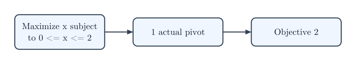
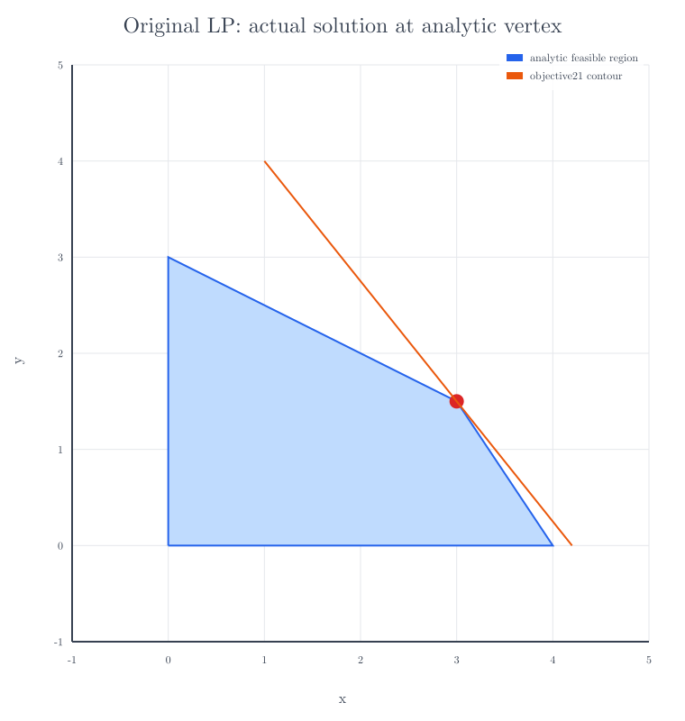
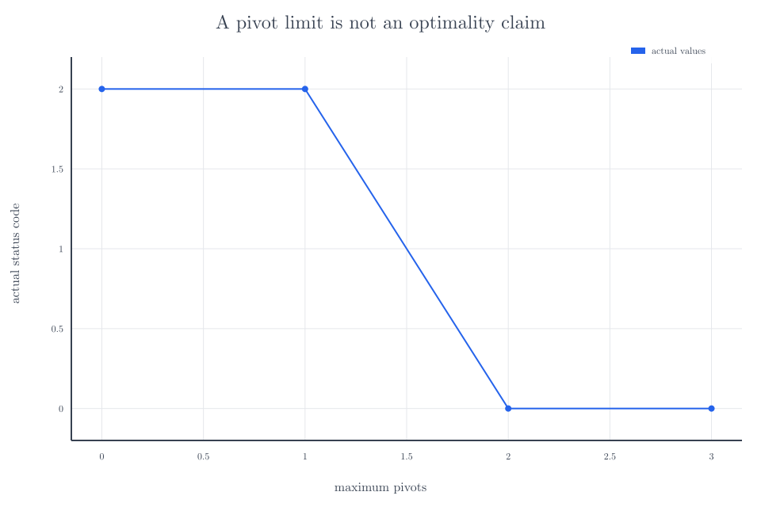
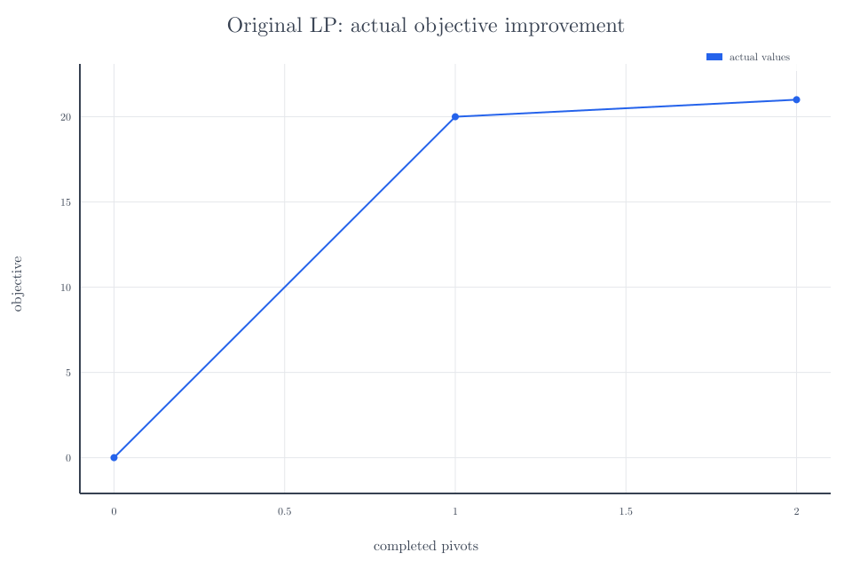

Simplex: actual pivots and explicit stopping conditions
Abstract
A linear objective must be maximized over nonnegative variables constrained by linear inequalities. With nonnegative right-hand sides, slack variables provide an initial feasible basis for primal simplex. We trace actual pivots, retain the original two-variable resource allocation, and explicitly distinguish optimal, unbounded and iteration-limited outcomes.
Mechanism and mathematical scope
For maximize c dot x with A x<=b and x>=0, introduce nonnegative slacks z so Ax+z=b. The origin with z=b is a feasible starting basis only when b>=0. There is no PhaseI or general infeasibility solver here.
An improving negative objective-row coefficient enters. For positive pivot-column coefficients, the minimum RHS/coefficient ratio preserves nonnegative basic values; exact ratio ties use the smallest basic-variable index. Normalize the pivot row, eliminate its column elsewhere, and update the basis. The captured tableau is the actual post-pivot state. In exact arithmetic Bland's rules prevent cycling; finite tolerance arithmetic is not an exact certificate.
The feasible vertices are (0,0),(4,0),(3,1.5),(0,3), with objectives0,20,21,12. The optimum21 occurs at the intersection(3,1.5). One pivot has tableau-sized work; the number of pivots can be exponential. Smallest-index choices and tolerances are explicit rather than an unqualified termination promise.
A tiny actual producing history
The table and native concept diagram read the same producing execution. Every block below is a complete editable C++ program.
#include <dm/dm.hpp>
int main() {
namespace a = dm::algorithms;
namespace g = dm::graphics;
std::filesystem::create_directories("build");
auto r = a::simplex_trace({1}, {{1}}, {2});
std::print("| actual entering | leaving variable | pivot | actual basis | actual tableau |\n| ---: | " "---: | ---: | --- | --- |\n");
for (const auto &s : r.history)
std::print("| {} | {} | {} | `{}` | `{}` |\n", s.entering, s.leaving,
s.pivot, s.basis, s.tableau);
g::Diagram concept_diagram(48, 1100);
concept_diagram.node("n0", {0, 0}, "Maximize x subject to 0 <= x <= 2");
concept_diagram.node("n1", {5, 0}, std::format("{} actual pivot", r.pivots));
concept_diagram.node("n2", {10, 0},
std::format("Objective {}", r.result.value));
concept_diagram.edge("n0", "n1").edge("n1", "n2");
concept_diagram.save_svg("build/simplex_tiny.svg");
}| actual entering | leaving variable | pivot | actual basis | actual tableau |
|---|---|---|---|---|
| 0 | 1 | 1 | [0] | [[1, 1, 2], [0, 1, 2]] |

The retained original experiment
#include <dm/dm.hpp>
int main() {
namespace a = dm::algorithms;
namespace g = dm::graphics;
std::filesystem::create_directories("build");
auto r = a::simplex_trace({5, 4}, {{6, 4}, {1, 2}}, {24, 6});
std::print("| status integer | actual x | objective | pivots | cell updates |\n| ---: | --- | ---: | " "---: | ---: |\n| {} | `{}` | {} | {} | {} |\n",
int(r.result.status), r.result.x, r.result.value, r.pivots,
r.cell_updates);
std::print("\n| pivot | actual basis | actual tableau |\n| ---: | --- | --- |\n");
for (std::size_t i = 0; i < r.history.size(); ++i)
std::print("| {} | `{}` | `{}` |\n", i, r.history[i].basis,
r.history[i].tableau);
auto plot = g::RPlot::create();
plot.polygon({0, 4, 3, 0}, {0, 0, 1.5, 3}, {191, 219, 254}, true).lines(
{0, 4, 3, 0, 0}, {0, 0, 1.5, 3, 0}, "analytic feasible region",
{37, 99, 235}).points({r.result.x[0]}, {r.result.x[1]}, {220, 38, 38}, 8).lines({1, 4.2}, {4, 0}, "objective21 contour", {234, 88, 12}).title("Original LP: actual solution at analytic vertex").x_label("x").y_label("y").size(760, 800).margins(80, 40, 72, 88).x_limits(-1, 5).y_limits(-1, 5);
plot.save_svg("build/simplex_original.svg");
}| status integer | actual x | objective | pivots | cell updates |
|---|---|---|---|---|
| 0 | [3, 1.4999999999999998] | 21 | 2 | 30 |
| pivot | actual basis | actual tableau |
|---|---|---|
| 0 | [0, 3] | [[1, 0.6666666666666666, 0.16666666666666666, 0, 4], [0, 1.3333333333333335, -0.16666666666666666, 1, 2], [0, -0.666666666666667, 0.8333333333333333, 0, 20]] |
| 1 | [0, 1] | [[1, 0, 0.24999999999999997, -0.4999999999999999, 3], [0, 1, -0.12499999999999999, 0.7499999999999999, 1.4999999999999998], [0, 0, 0.7499999999999999, 0.5000000000000001, 21]] |

Explicit controls
#include <dm/dm.hpp>
int main() {
namespace a = dm::algorithms;
namespace g = dm::graphics;
std::filesystem::create_directories("build");
std::vector<double> x, y;
std::print("| requested pivot limit | actual status (0 optimal,1 unbounded,2 limit) | objective | " "pivots |\n| ---: | ---: | ---: | ---: |\n");
for (std::size_t cap : {0, 1, 2, 3}) {
a::SimplexOptions o;
o.max_pivots = cap;
auto r = a::simplex_run({5, 4}, {{6, 4}, {1, 2}}, {24, 6}, o);
std::print("| {} | {} | {} | {} |\n", cap, int(r.result.status),
r.result.value, r.pivots);
x.push_back(cap);
y.push_back(int(r.result.status));
}
auto unbounded = a::simplex_run({1}, {}, {});
std::print("\nUnconstrained improving objective status {}. Negative RHS is rejected: no PhaseI.\n",
int(unbounded.result.status));
auto plot = g::RPlot::create();
plot.lines(x, y, "actual values", {37, 99, 235}).points(x, y, {37, 99, 235},
4).title(
"A pivot limit is not an optimality claim").x_label("maximum pivots").y_label("actual status code");
plot.save_svg("build/simplex_controls.svg");
}| requested pivot limit | actual status (0 optimal,1 unbounded,2 limit) | objective | pivots |
|---|---|---|---|
| 0 | 2 | 0 | 0 |
| 1 | 2 | 20 | 1 |
| 2 | 0 | 21 | 2 |
| 3 | 0 | 21 | 2 |
Unconstrained improving objective status 1. Negative RHS is rejected: no PhaseI.

Actual selected work and sensitivity
#include <dm/dm.hpp>
int main() {
namespace a = dm::algorithms;
namespace g = dm::graphics;
std::filesystem::create_directories("build");
std::vector<double> x{0}, y{0};
auto r = a::simplex_trace({5, 4}, {{6, 4}, {1, 2}}, {24, 6});
std::print("| actual completed pivots | objective row RHS |\n| ---: | ---: |\n| 0 | 0 |\n");
for (std::size_t i = 0; i < r.history.size(); ++i) {
const auto value = r.history[i].tableau.back().back();
std::print("| {} | {} |\n", i + 1, value);
x.push_back(i + 1);
y.push_back(value);
}
auto plot = g::RPlot::create();
plot.lines(x, y, "actual values", {37, 99, 235}).points(x, y, {37, 99, 235},
4).title(
"Original LP: actual objective improvement").x_label("completed pivots").y_label("objective");
plot.save_svg("build/simplex_work.svg");
}| actual completed pivots | objective row RHS |
|---|---|
| 0 | 0 |
| 1 | 20 |
| 2 | 21 |

API and interpretation
Optimal and Unbounded are tolerance-based floating-point conclusions; ill-scaled constraints need independent residual checks or a certified solver. IterationLimit retains the current basis and never means optimal. Nonfinite coefficients, ragged shapes, negative RHS and invalid tolerance fail before tableau allocation. Default tolerance1e-9, pivot cap100000 and tableau bound one million cells are explicit. The shaded original region and contour are labelled analytic references; the red point comes from the actual solve.
Reusable producers, fixtures and histories live in the canonical C++ library. Captured records own their values and do not come from a separate report replay. Selected counters and record/scalar policies are specified at their API boundaries; they are not peak-byte or wall-time budgets. Synthetic structural inputs are controlled fixtures for these mechanisms.
References
Verified in the shared ten-document batch: 48 scoped native cases;20 directly
instrumented ASan/UBSan cases;77 executable public examples;252/252 full-file
definitions across21 scopes;10 hovers;1843 independent records/11127
checks;frozen comparisons across all ten families with translation-cancellation
and strict-parser corrections recorded;11 checkout/installed standalone headers
and linked ten-family consumer;40 executed programs and40 inspected figures with
both exports. Receipts: build/mepml-conversion/batch-354-363/.